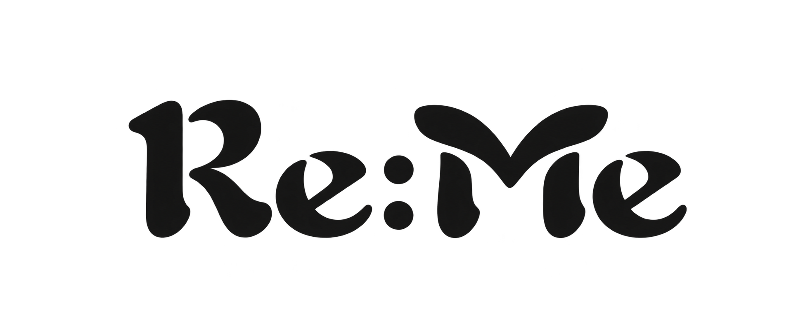

A page worth coming back to.
Relevant memories can find you while you browse.
Planning a trip to Japan? That little café you saved could be just the place to stop.
Try the appearance only. This example doesn’t enable tracking or change your memories.